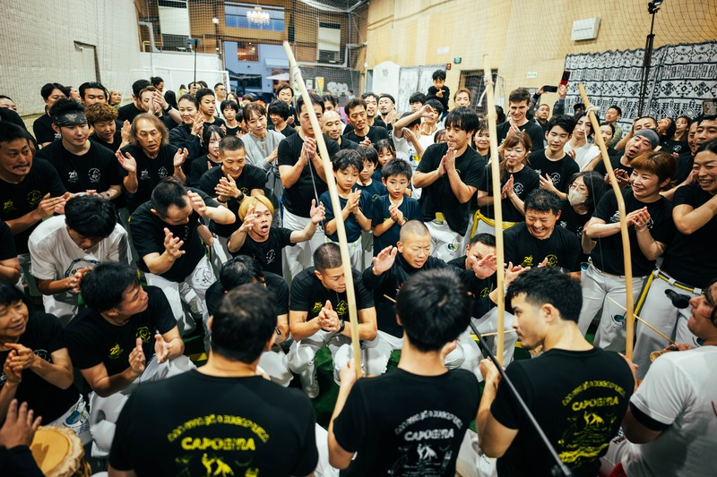
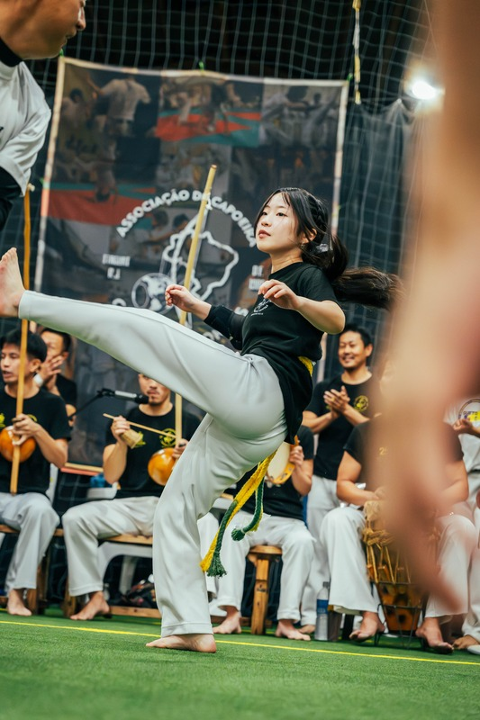
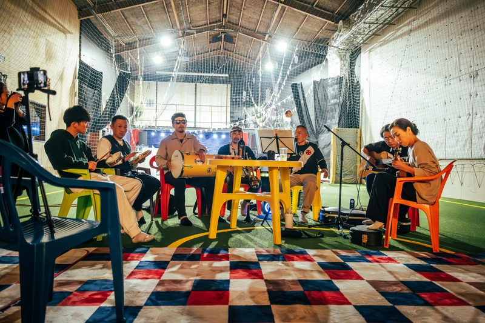

CCJ OSAKA / HYOGO PRESENTS
大阪
バチザード2026
音が鳴れば、輪が生まれる。
年に一度の最大のお祭りが、今年もやってくる。
各地からゲスト多数来場予定
DATE11月15日 日曜日
TIME12:00–17:00
PLACERANDC 箕面
PHOTO: 2025 OSAKA BATIZADO
01 / EVENT
開催のご案内
踊る人も、歌う人も、応援する人も。たくさんのゲストと仲間が集まり、同じ輪の中で一年の成長を祝います。
開催日2026年11月15日（日）
時間12:00〜17:00詳しい進行は後日お知らせします
会場RANDC（ランドシー）大阪府箕面市西宿2丁目20-6
見学無料。ご家族・お友だちもぜひ！
参加費・お申し込みなどの詳細は決まり次第お知らせします。
THE ENERGY OF BATIZADOこの輪の熱気を、
この輪の熱気を、
今年も。
昨年の大阪バチザードより。音楽、動き、歓声がひとつになった瞬間。



02 / THE CELEBRATION
バチザードとは
カポエイラの節目を、音楽と仲間に囲まれて祝うセレモニー。コミュニティにとって、年に一度の大きなお祭りです。
01
成長を祝う
初めて帯を受け取る人、次の帯へ進む人。それぞれの歩みを形に残します。
02
輪をつくる
歌や楽器の音に包まれながら、仲間とカポエイラを分かち合います。
03
一緒に楽しむ
各地から来場予定のゲストとともに、昇段する人を応援。会場いっぱいの熱気を感じられる一日です。
03 / ACCESS
会場へのアクセス
04 / DISCOVER
はじめての方へ
カポエイラとは
ブラジルで生まれた、音楽・歌・身体表現が一つになった文化。楽器の音と歌の中で、二人が動きを交わします。輪の中に生まれる会話を、ぜひ会場で感じてください。
CCJの活動
CCJ.CAPOEIRA OSAKA は、大阪・兵庫で子どもと大人のクラスを開いています。年に一度のバチザードのほか、地域イベントや合宿でもカポエイラを楽しんでいます。
CCJ公式サイトを見る ↗COME FEEL THE ENERGY
輪の中で、お会いしましょう。
イベントについてのご質問は、CCJカポエイラ事務局へ。
参加方法などの詳細は決まり次第、このページでご案内します。